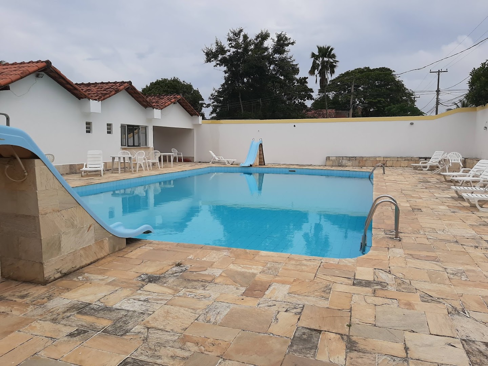
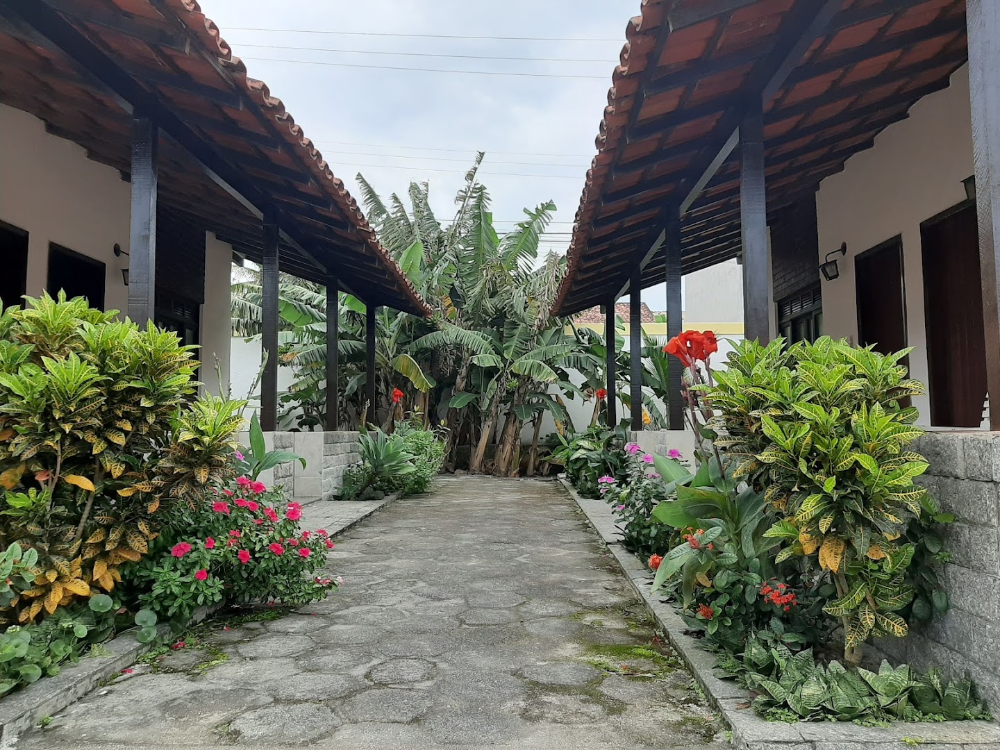
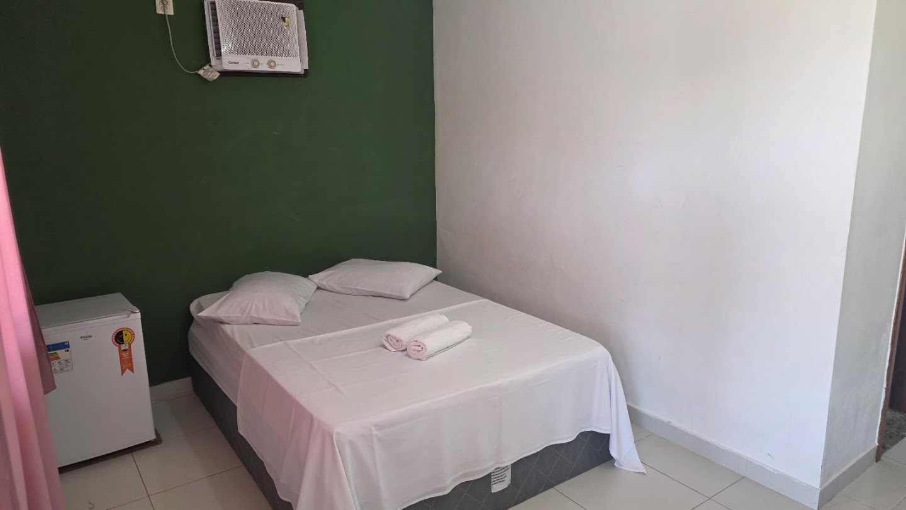
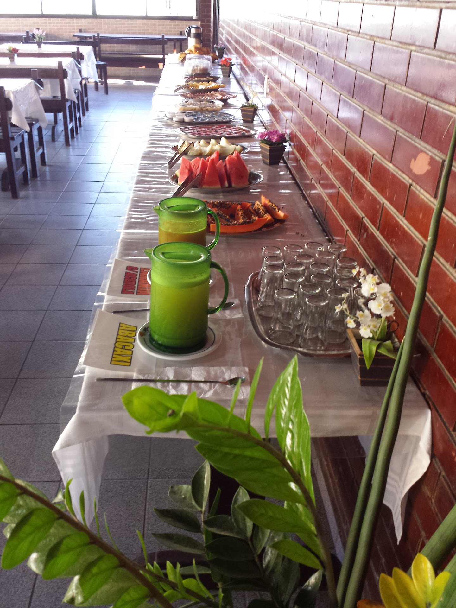
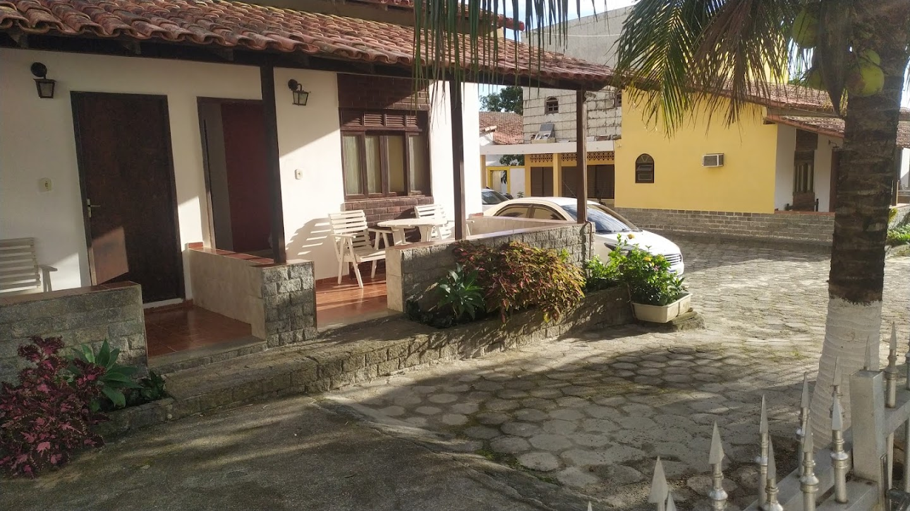

COQUEIRAL · ARARUAMA · RIO DE JANEIRO
Seu tempo.
Seu descanso.
Seu cantinho aqui.
Chalés com varanda, jardins e um mergulho para deixar a rotina lá fora. Conheça o Chalé do Coqueiral.
BEM-VINDO AO CHALÉ DO COQUEIRAL
Abra a porta.
Aproveite o dia.
No bairro Coqueiral, em Araruama, a pousada reúne acomodações com varanda, jardins e espaços para aproveitar o tempo ao ar livre.
Comece com um café da manhã, faça uma pausa na piscina e volte para seu cantinho. TV, ar-condicionado, frigobar e estacionamento completam a estrutura para sua estadia.
UM POUQUINHO DO QUE ESPERA POR VOCÊ
Da varanda ao mergulho.
Conheça os espaços
pelas fotos da pousada.


SEU DESTINO: ARARUAMA
Um encontro
com dias mais leves.
Programe sua visita e consulte as orientações de chegada diretamente com a pousada.
Rua Jussara, 1088Coqueiral · Araruama · RJ
CEP 28970-000Ver localização no Google Maps ↗
VAMOS CONVERSAR?
Seu descanso
começa por aqui.
Consulte disponibilidade e valores para as suas datas.
@hotelchalecoqueiral ↗